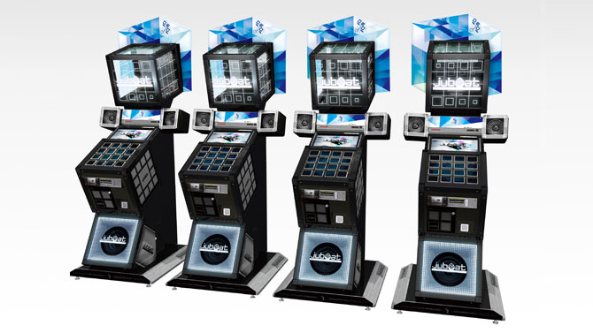

Jubeat
Overview
Jubeat (ユビート, Yubīto), stylized as jubeat, is a series of arcade music video games developed by Konami Computer Entertainment Japan, and is a part of Konami's Bemani line of music video games. The series uses an arrangement of 16 buttons in a 4x4 grid for gameplay, a grid also used for the displaying of cues and part of the user interface.
The basic gameplay of the series is similar to Nintendo DS music games such as Osu! Tatakae! Ouendan and Elite Beat Agents and can be considered to be similar to Whac-A-Mole. Animated explosions or other animations, called "markers", that can be chosen at the song select screen are shown within the panels synced to a track of the player's choosing; when they reach a "hot point", which is dependent on the marker chosen, the player must tap the corresponding screen to score points. Taps can be judged as either Perfect, いい感じ (Good), 早い (Fast), or 遅い (Slow). 3 difficulties (Basic, Advanced, and Extreme) are offered for each song. As with other Konami games, an e-Amusement card can be used to save statistics and a player ranking, and can also be used to access unlockable songs. Single player and linked multiplayer modes with multiple cabinets are also offered. In the app version of Jubeat, players can choose from three different levels of difficulty, just like in the arcade version: basic, advanced and extreme. Moreover, they can program their own beats for every song and invite people to play.
Versions
- jubeat (2008)
- jubeat ripples (2009)
- jubeat knit (2010)
- jubeat copious (2011)
- jubeat saucer (2012)
- jubeat prop (2015)
- jubeat Qubell (2016)
- jubeat clan (2017)
- jubeat festo (2018)
Licensing
Nam id justo fringilla, pharetra dolor et, ultrices purus. Cras vitae commodo lectus. Aliquam commodo vestibulum nisl, eget sagittis diam auctor varius. Pellentesque auctor mauris nisl, non auctor tortor cursus ut. Nunc vel tincidunt elit. Vivamus varius augue libero, ut sagittis sapien volutpat a. Donec nulla diam, eleifend at sapien at, dapibus tempor ipsum. Pellentesque massa dolor, ullamcorper sed gravida eu, porta at tortor. Pellentesque condimentum libero sed augue venenatis posuere. Sed aliquet orci ac felis imperdiet, vitae scelerisque augue sollicitudin. Cras quis egestas elit, nec efficitur nunc.
Shipping
In eget dolor enim. Pellentesque habitant morbi tristique senectus et netus et malesuada fames ac turpis egestas. Sed fringilla quam sem, sit amet mollis libero malesuada eget. Donec congue mollis velit vitae sollicitudin. Aliquam ullamcorper pellentesque volutpat. Fusce volutpat fringilla nunc, sit amet maximus nisl pellentesque sit amet. Duis non tempor libero, non lobortis erat. Cras vel nisi enim. Nulla quis ante luctus, tempus purus vitae, maximus dolor. Nam augue purus, dictum eget arcu sed, dignissim finibus sem. Integer tempor sem vel est maximus bibendum.